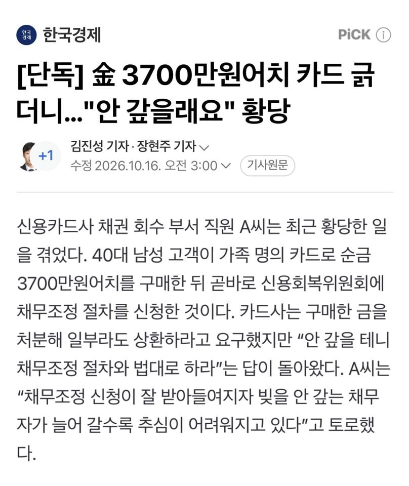

ㅋㅋ 병신같은글에 어그로 끌렸네 고맙다
실화려면 ㅈ소기업 사장 아들내미 2030이 저렇게 해야 신빙성이 생기지.
카드사가 집이든, 전월세 보증금이든 임의경매 신청할건데
지명의로된게없나보지 카드도 가족명의래자나 그가족도 신용불량자만들려나보지 의외로 신용불량자로 최저시급만받으면 그건 압류안되니까 ((달에250만원)) 보증급도 5천만원미만 압류급지법이있어서 그렇게사는사람들많음 결혼했으면 배우자명의나 자식명의로사는사람들도많고
구라좀 치지마라 최근생긴채무를 어떤은행이 채무조정 동의해주냐
유사언론 상상속의 은행에선 해주나봐
ㅇㅇ 최근 6개월인가 채무가 일정비율 이상이면 채무조정 접수자체가 불가능한데 기사는 대체 어떤 시나리온지 모르겠음
기사를 ㅈ같이쓴거같은데 저곧바로가아니라 한 1년정도있다가 신청한거같음 내주변에 그렇게해서 개인회생받고있는사람이있음 1년좀 넘자말자 8천만원 바로회생넣고좋아하더라 8천은 한번에받은게아니라 계속돌려막고 받고하다가 회생함
채무조정은 접수한다고 되는게 아니라 채권자 동의도 있어야함.
그 과정에서 도덕적 해이로 부결나기도 하고, 접수 자체도 최근 6개월 내 채무액이 전체 채무 비중의 30%를 넘어가면 불가능함.
AI로 스토리만들어 작성했냐? 병신기레기새끼야?
다들 외우세요.
xx경제, 여성신문
상공회의소
-> 언론 아닙니다. 여기서 쓰는 기사들은 모두 특정 계층을 위해 왜곡되고, 조작됐다고 봐도 무방함.